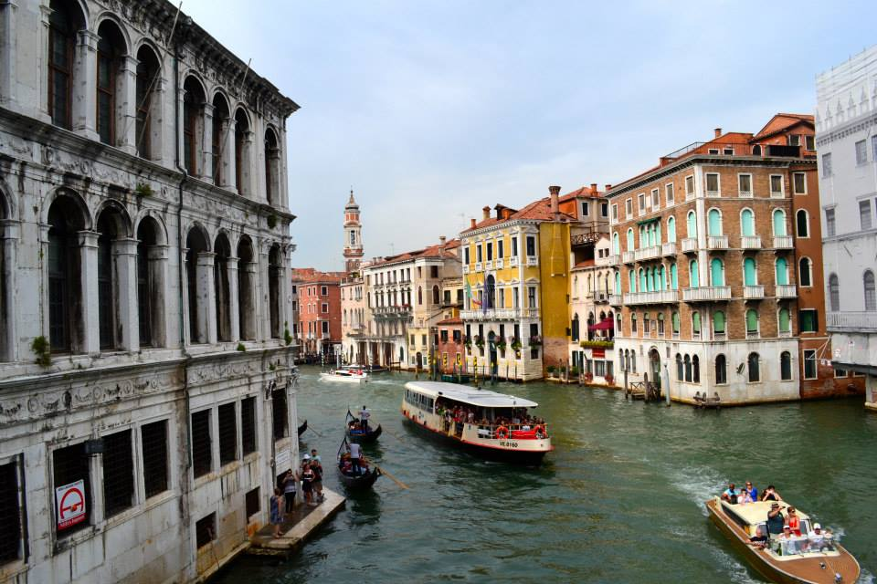

The view of the canals in Venice, Italy. The vibrant colors and beautiful waters were surreal.
Visting the markets in Florence, Italy. Every stall is filled with beauty.
Erinn go Brach! The beautiful views of the cliffs of moher located in County Clare, Ireland.
My two friends from Hanbury Home Orphange in Mandaville, Ja. Every day in Jamiaca is beautiful day for recess.
The entrance of Trinity College, Dublin.
A peaceful day in Kingstone, Ja.
Spring has sprung in Savannah, GA.
It's hard not to find the historic Rainbow Avenue picturesque in Charleston, SC.

Ireland's hidden peaceful spots. Life with the leprechaun's is quite quaint.